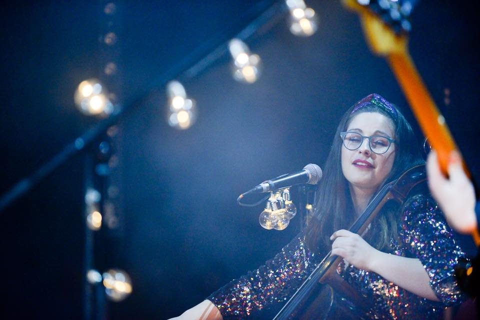

.jpeg)
Photo: Viktor Schanz
.jpeg)
Photo: Bård Gundersen
.jpeg)
Photo: Lars Fremmerlid
Photo: Markus Tora Mori Green
One of my favorite parts about being a musician and composer is that I get to work with so many different people, on a lot of different projects. Don't hesitate to contact me at ofeliaossum@gmail.com for booking requests, lessons, or more information about a specific project.
(Booking requests for Team Me, contact eirik@polarartist.no, and booking requests for Einar Stray Orchestra, contact kai.lehmann@cabinartists.com)
Team Me
Team Me is an energetic indie band with a Norwegian Grammy award and several radio hits on the CV. Since the first EP, released in 2011, I've been playing on most of the recordings, and in 2018 I became a permanent member of the live band as well. On stage I get to switch between my favorite instruments all the time, which fits me perfectly. Team Me has released several albums and EPs, and is touring all over Norway, Europe and Japan.

Einar Stray Orchestra
Einar Stray Orchestra was my first "proper" band project. Since the small beginning in 2007, we have evolved from a bedroom indie solo project to a sometimes hard-hitting band with a sound that spans from classical music and post-rock, to prog and pop music. This is where I first started to experiment with sound, pedal effects and genres, and where I've fine-tuned the skill of playing cello, singing, and maneuvering pedals at the same time. ESO has also a long list of recordings, and is also touring all over Norway, Europe and worldwide.
Solo project
This is kind of my own playground, where I get to use everything I like about different genres and sounds, and experiment with it in every way. The music usually ends up within a range from folk-inspired, alternative pop to contemporary music, with melodic, yet complex arrangements. I've played several solo concerts in Norway and Germany, and I'm planning on releasing some music within the next couple of years.
Miscellaneous
Since 2020, I've been singing in, conducting, and composing/arranging for a female choir called "Ikvelderdetlovåværekoret". We sing folk tunes, popular music, and our own arrangements of various songs. We are mostly known for our collaboration with the artist Nils Bech, whom we sung with in the Oslo Opera House for a sold out Main Stage in the beginning of 2022, and at Oslo Pride 2022. More collaborations with different artists will happen the next years.
For some years, I collaborated with the Vietnamese activist and musician Mai Khoi . She is protesting the Vietnamese government and how they treat the Vietnamese people and artists. We worked together with her songs about her life and activism and played several shows in Oslo in 2019.
Since 2017, I've been collaborating with the vocalist Julie Kleive and pianist Torfinn Kleive in different constellations. We play both Julie's own songs as well as cover songs, with completely new arrangements made by us. We've played many concerts around in Norway, usually. Every year, we also have a Christmas concert in Bærum Kulturhus, right outisde of Oslo, in an ensemble consisting of Hilde Fjerdingøy (melodeon), Torkjell Hovland (double bass), Torfinn Kleive, Julie Kleive and myself.
During my professional career I've also been working both live and/or in the studio with bands and artists such as
Moddi, Kråkesølv, Jan Eggum, Siv Jakobsen, Jakob, Nora Konstanse, Cold Mailman, Rikke Normann and Therese Aune, to name a few.
Compositions/arrangements
I write music for sinfonietta, choirs, smaller ensembles in different constellations and solo pieces for
piano, strings, and winds.
My works are both completely acoustic and a combination of electronics and acoustics. The music often
has a contemporary classical sound, but just as often a more folk or pop vibe.
I can make new, commissioned music or arrangements for various instrumentations on demand, both for
ensembles, solo instrumentalists or bands/artists who want "something extra" to their songs.
Contact me for sound examples or sheet music.
Production/recording
I'm a well experienced studio musician, and I enjoy working together with bands/artists/producers in the
studio.
During the years, I've also built up my own home studio where I record a lot of music, both for myself
and others.
I started out working with musical theatre this way, and I have both made, played and recorded music for
full-length musicals in my own studio.
Events
I'm available for playing at most types of events, like weddings, funerals, conferences and so on.
I take music requests, and can also help finding the right type of music/ensemble for the event.
I have several constellations of ensembles, for any type of setting and musical preferences:
- Solo performance (cello/piano/voice)
- Small ensemble (e.g., with more string players, guitar and/or another voice)
- Vocal ensemble (from trio to octet)
- Full band (with a long list of cover songs to choose from)
Lessons
I give lessons in piano, cello and vocals from beginner to intermediate level, in all ages.
I started teaching music in 2004 and have since then had a great number of students.
In addition to private lessons, I have more than ten years of experience teaching musical theatre for
children, and four years of experience teaching music at a primary school.
It's important to me that the lessons are planned with each individual student's wishes and needs (and
of course age) in mind, so no courses will be completely the same.
Each lesson/course can be adapted for the student, from the time frame of each lesson, to how often we
have lessons and what we focus on in each lesson. I give lessons in Norwegian and English.